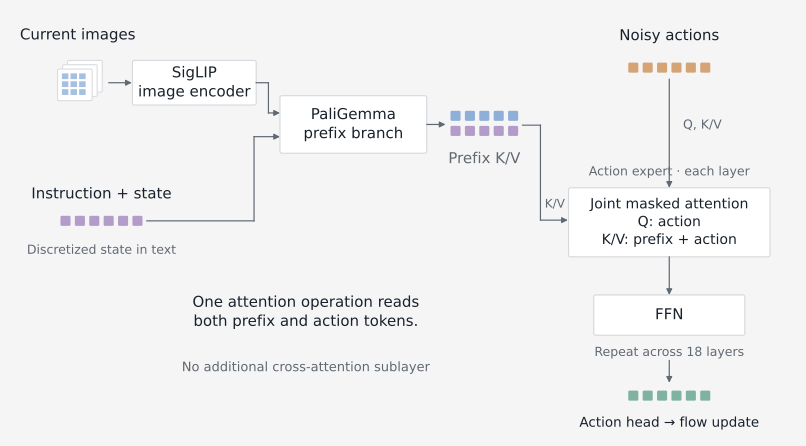
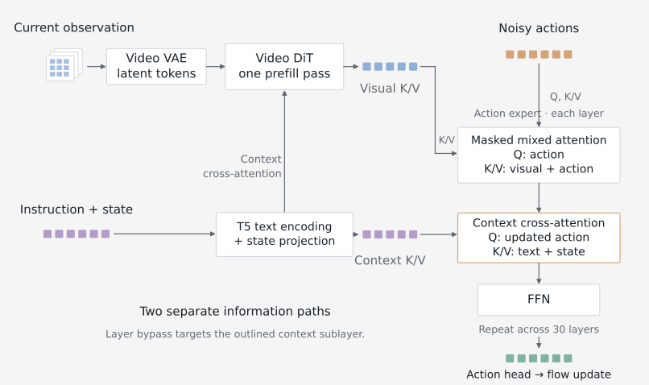
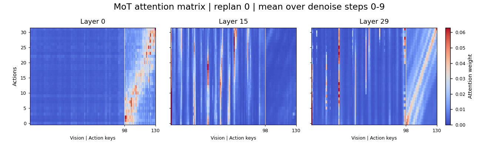
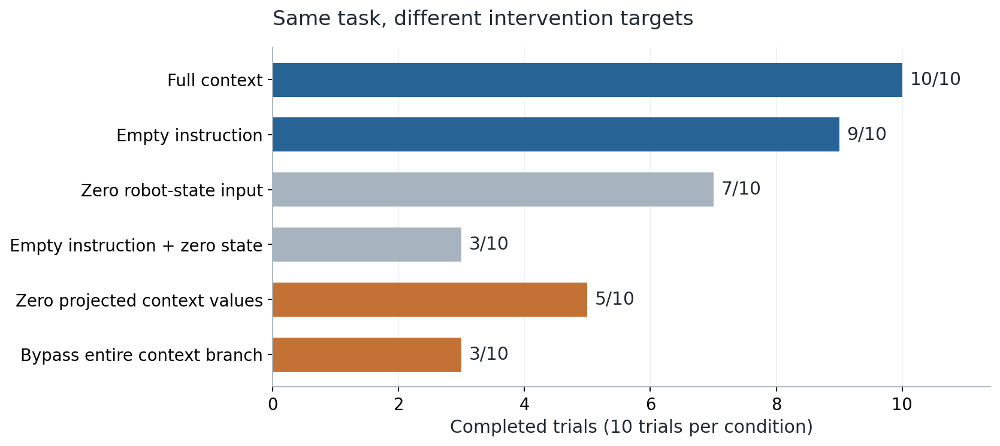
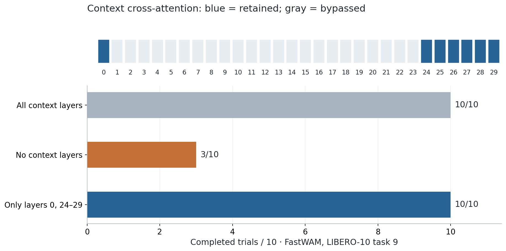
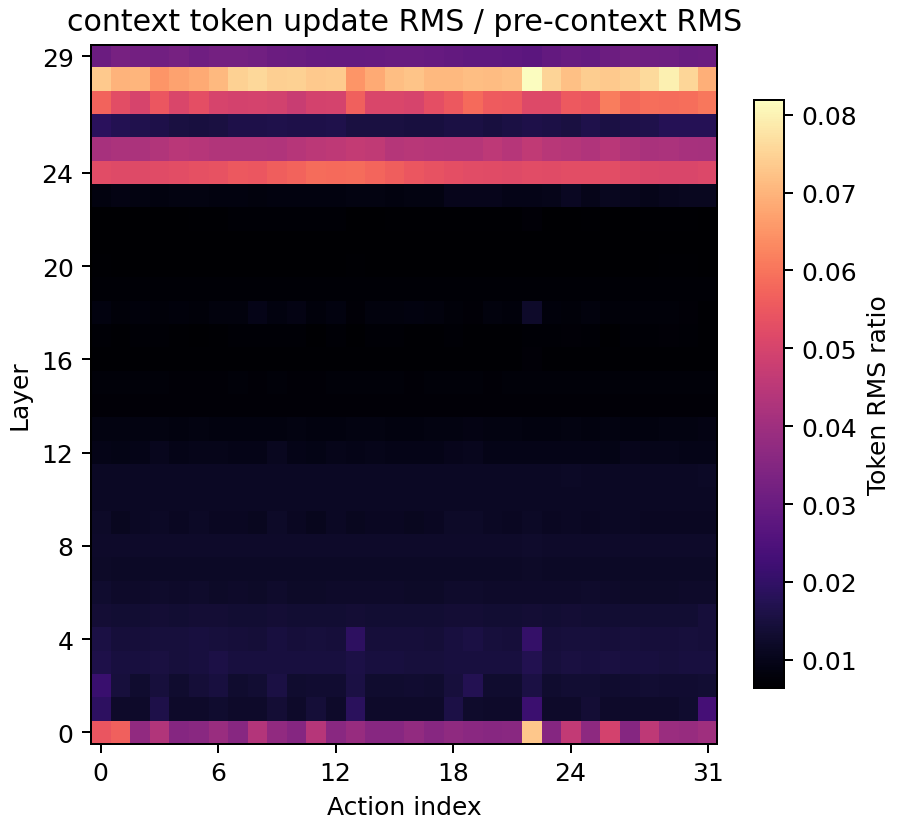
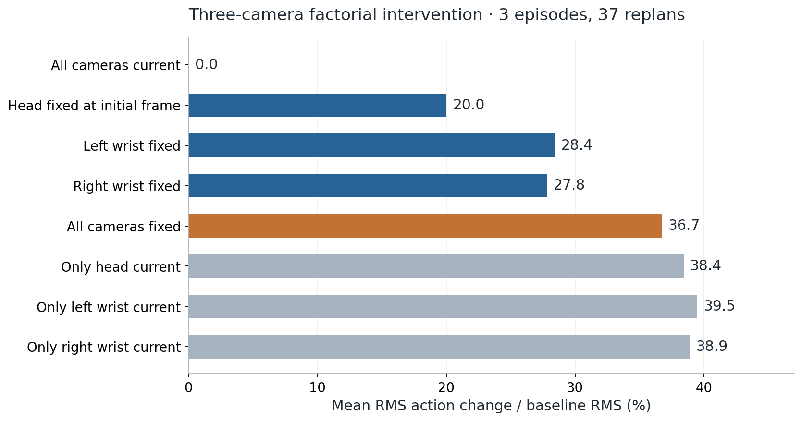
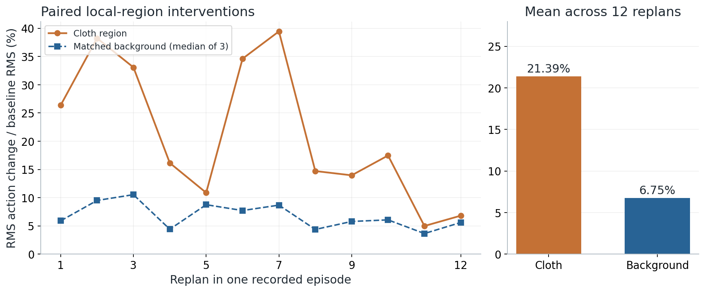
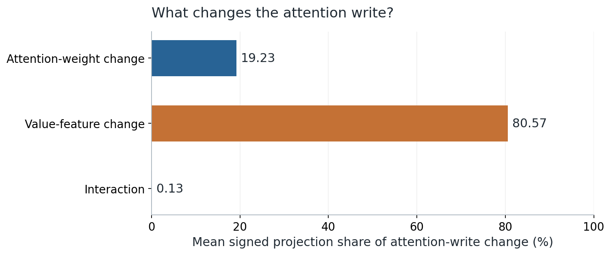
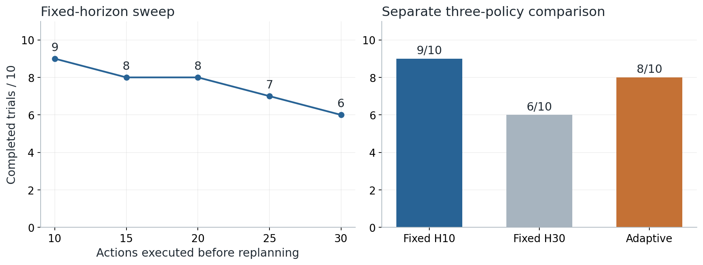

Two models, different information paths
Before interpreting an attention map, identify which computation it represents. These diagrams show the cached inference path at a new observation, not the complete training architecture. The observation branch prepares per-layer keys and values once per replan; action denoising reuses those caches. Token squares indicate information types, not token counts.
Q means queries: what the action representation reads. K/V means keys and values: the information it reads from. FFN is the feed-forward network inside a Transformer layer. Input/output projections, normalization, residual connections and timestep modulation are omitted for clarity; the action head predicts a flow update, and denoising repeats to produce an action chunk.
π0.5 · one joint masked-attention path

FastWAM · mixed attention plus context cross-attention

A map is a starting point, not an explanation
The investigation began with action-query attention: which image patches, instruction tokens and action positions receive weight? A single averaged map hid substantial changes across layers, denoising steps and replans. I therefore organized the traces around the actual model input at each replan, with exact patch-grid mappings and separate views of the attention paths.
The information paths above determine what a trace can mean: action-to-prefix weights in π0.5 are part of joint masked attention, whereas FastWAM has both mixed visual–action attention and a separate context branch. I keep these paths distinct instead of treating every action-to-condition heatmap as the same kind of cross-attention.
Where the query distributes its weights.
What the weighted features actually add to the hidden state.
How predicted actions or closed-loop completion change after intervention.
These measurements answer different questions. A large attention weight need not produce a large residual update; a small update can still matter downstream. Likewise, an action-vector difference in replay is not a task-success measurement.

PyTorch · measure the residual update, not just attention weights
def residual_metrics(x_before, update):
"""Per-token diagnostics for [batch, tokens, hidden] tensors.
Aggregate over explicitly named layer/step/replan axes afterwards.
"""
x, d = x_before.detach().float(), update.detach().float()
x_rms = x.square().mean(-1).sqrt().clamp_min(1e-8)
return {
"update_ratio": d.square().mean(-1).sqrt() / x_rms,
"cosine": F.cosine_similarity(x, d, dim=-1, eps=1e-8),
"post_pre_scale": (x + d).square().mean(-1).sqrt() / x_rms,
}Record x_before immediately before the selected residual addition and update after its output projection and any gate. These operations measure tensors already computed by the model; they do not replace its attention kernel. The teaching helper returns per-token values. The reported traces explicitly aggregate their layer, denoising-step and replan axes.
If the instruction can be empty, can the branch disappear?
With the official FastWAM LIBERO checkpoint, task 9—putting the yellow-and-white mug in the microwave and closing it—completed in 10/10 baseline trials and 9/10 with an empty instruction. Removing the entire context cross-attention branch was very different: only 3/10 trials completed.
Content dependence and branch dependence are not the same. Weak sensitivity to an empty instruction does not make the complete conditioning computation redundant.
The other controls help separate these effects: zeroing robot-state input gave 7/10, empty text plus zero state gave 3/10, and zeroing the projected context values gave 5/10. Zeroing values preserves the Q/K and output-projection machinery; bypassing the branch skips its complete residual write.

This behavior was not universal. FastWAM's RoboTwin hanging-mug task fell from 3/3 to 0/3 with empty text, while placing a container on a plate retained 2/3. The π0.5 LIBERO task-9 comparison retained 1/3. The appropriate conclusion is about these task/checkpoint/intervention combinations, not that robot policies ignore language.
An empty or incorrect instruction can also change the input distribution. These interventions establish sensitivity to a particular modification; they do not isolate a single abstract notion of language understanding. Complete prompt controls and recording limitations are collected below.
Can the middle context branches be bypassed?
Bypassing context everywhere reduced completion, but that does not tell us whether every layer's context branch is needed. To narrow that question, I inspected what each branch writes into the residual stream. In one successful FastWAM task-9 trace, mean update-to-input RMS ratios were approximately 0.114 for mixed self-attention, 0.019 for context cross-attention and 0.103 for the feed-forward branch. The context update was small on average but not uniformly small across layers.
That pattern suggested a concrete intervention: retain context cross-attention in layer 0 and layers 24–29, while bypassing it in layers 1–23. The 10-trial follow-up completed 10/10, matching the baseline's observed count; bypassing context everywhere completed only 3/10.

A useful structural hypothesis, with a narrow validation scope. Layerwise measurements guided an actual intervention. The retained branches were sufficient for these trials; this does not prove that each retained layer is necessary, that the change generalizes, or that end-to-end latency improved.
Inspect the residual profile behind the layer selection
{kind=link}

The full trace contains 26 replans × 10 denoising steps × 30 layers = 7,800 layer events from one rollout. Those events are not 7,800 independent trials. The earlier three-trial pilot is not added to the later ten-trial result.
PyTorch · bypass only the selected context residual branches
def post_attention_branches(block, x, context, context_mask,
shift, scale, gate, layer_id, keep=None):
"""x is AFTER the mixed-self-attention residual, not a block input.
Call in BOTH video-prefill and action paths for the reported setting.
shift/scale/gate must already broadcast to x: [B,S,D].
"""
if context is not None and (keep is None or layer_id in keep):
if context_mask is not None and context_mask.ndim == 3:
context_mask = context_mask.unsqueeze(1)
delta = block.cross_attn(
block.norm3(x), context, ctx_mask=context_mask)
x = x + delta
# Only context cross-attention is conditional. FFN remains active.
z = block.norm2(x) * (1 + scale) + shift
return block.gate(x, gate, block.ffn(z))
KEEP_CONTEXT_LAYERS = {0, 24, 25, 26, 27, 28, 29}Teaching adaptation of the reviewed FastWAM post-attention path. The mixed-self-attention residual has already run when this function is called. The shared keep-set is applied on both video and action calls; keep=None retains all context branches. Kernel selection, trace storage, gradient checkpointing and model-loading code are omitted.
Does low visual attention mean weak visual use?
In the cloth-folding π0.5 replay, some image-origin positions received surprisingly little direct action attention, while letterbox-padding positions received substantial mass. Rather than equating that map with what the policy used, I tested the image inputs.
Start with the cameras
For each recorded observation, selected cameras were replaced with their exact initial-frame input. All eight current/fixed combinations of the head and two wrist cameras were evaluated across three recorded episodes, covering 37 noninitial replans. Each paired comparison used the same prompt, zero-state representation, action anchor and explicit denoising noise.

Fixing the head alone changed predicted actions by about 20%, despite its smaller direct attention allocation. The combinations were non-additive and sometimes non-monotonic: restoring only one live stream did not necessarily bring the action closer to the all-current baseline. This is why a camera ranking based solely on attention—or one-camera-at-a-time ablation—would be incomplete.
Then localize the changed information
Fixing a complete camera changes robot pose, scene details and task-phase cues together. To narrow the test, tracked clothing masks were used to replace only the current clothing pixels with the same locations from the initial image. Equal-area non-clothing regions served as controls, with three background choices per replan.

The policy is sensitive to information in the clothing region. This is stronger evidence of visual dependence than a heatmap, but it does not prove semantic understanding of clothing or better closed-loop folding.
PyTorch · change a visual region while holding denoising noise fixed
@torch.inference_mode()
def paired_visual_probe(infer, observation, image_key, first_image,
region_mask, noise):
"""Preprocessed image [B,C,H,W]; mask [B,1,H,W], True = replace.
infer(obs, noise=...) returns raw action tensor [B,Horizon,D].
Caller uses eval mode and deterministic preprocessing; infer is pure.
"""
if region_mask.dtype != torch.bool:
raise TypeError("region_mask must be boolean")
changed = dict(observation)
changed[image_key] = torch.where(
region_mask, first_image, observation[image_key])
clean = infer(observation, noise=noise.clone())
altered = infer(changed, noise=noise.clone())
repeat = infer(observation, noise=noise.clone())
delta = altered.float() - clean.float()
axes = tuple(range(1, clean.ndim))
ratio = delta.square().mean(axes).sqrt() / (
clean.float().square().mean(axes).sqrt().clamp_min(1e-8))
return clean, altered, {
"raw_action_change_ratio": ratio,
"repeat_max_abs": (repeat - clean).abs().max().item(),
}A compact single-image intervention after preprocessing. The full experiment applies its corresponding camera masks jointly and preserves the other observation fields. A caller must maintain model evaluation mode, deterministic preprocessing and the same action decoding. The repeat check detects changes in repeated calls; it does not replace a separate comparison of instrumented versus native inference.
Look at what is written, not only where attention points
A change in image input can change both the attention weights and the features being read. For the clothing intervention, I re-ran the baseline, clothing edit and one fixed background control with internal tracing. All 39 traced calls reproduced their earlier action arrays exactly, with maximum absolute difference zero.
The attention-write difference was then decomposed into a weight-change route, a Value-feature-change route and their interaction. The Value route accounted for about 80.57% of the mean signed projection along the measured write difference; changing attention weights accounted for about 19.23%.

Expand the Attention/Value decomposition and its interpretation
Let A be the attention matrix and V the corresponding Value features. Subscripts 0 and 1 denote normal and modified inputs. Before a fixed linear output projection:
The terms must be transformed through the same output-projection and applicable gate conventions as the measured write. They can reinforce or oppose one another; a share is not constrained to [0,1]. Near-zero differences need explicit handling. This algebraic breakdown does not establish a unique semantic mechanism for the final action.
The follow-up uses one fixed background control, giving a mean action-change ratio of about 6.58%, rather than the median-of-three 6.75% in the preceding figure. They are different summaries of the controls, not contradictory measurements.
Test hidden-state locations with activation patching
To go beyond image edits, I also implemented clean-to-corrupted prefix activation patching. At a chosen Transformer layer, a subset of the corrupted run's input residual positions is replaced by the corresponding clean activations. The remaining prefix computation and action denoising then continue with the same noise.
Record the chosen layer's residual inputs and reference action.
Alter the image region; measure the resulting action difference.
Restore selected internal positions and measure recovery toward the clean action.
This distinguishes intervention on pixels from intervention on a representation. Regions can be compared at a fixed layer, or the same region can be restored across layers. The code below exposes the mechanism; this report does not attach an aggregate success-rate claim to the patching probe.
PyTorch · restore selected residual positions at a chosen prefix layer
@contextmanager
def patch_layer_input(layer, clean_hidden, positions):
"""Replace selected [B,S,D] layer-input residual positions.
clean_hidden is recorded at this SAME layer on the clean prefix pass.
Supports positional or keyword 'hidden_states'; removes hook on error.
"""
def replace(_module, args, kwargs):
keyword_input = "hidden_states" in kwargs
x = kwargs["hidden_states"] if keyword_input else args[0]
restored = x.clone()
clean = clean_hidden.detach().to(device=x.device, dtype=x.dtype)
restored[:, positions, :] = clean[:, positions, :]
if keyword_input:
return args, {**kwargs, "hidden_states": restored}
return (restored, *args[1:]), kwargs
handle = layer.register_forward_pre_hook(replace, with_kwargs=True)
try:
yield
finally:
handle.remove()
def directional_recovery(clean_action, corrupt_action, patched_action):
target = (clean_action - corrupt_action).double().flatten()
recovered = (patched_action - corrupt_action).double().flatten()
denom = target.dot(target)
if denom <= 1e-12:
raise ValueError("No clean/corrupt gap to explain")
return recovered.dot(target) / denom # Not clipped to [0,1].Run the corrupted prefix under with patch_layer_input(layer, clean_hidden, positions):, then denoise using the resulting cache and the same explicit noise. Capture the clean tensor at the same layer-input boundary. Earlier layers' already-produced K/V entries remain corrupted when patching a later layer; late patching therefore need not recover the whole clean action.
Padding-origin positions require particular care. After visual encoding and layer mixing, their features need not represent only the original black pixels. Likewise, different attention heads can specialize in different cameras; averaging heads conceals some of that structure. The investigation included headwise output-projection checks and mask-quality review rather than treating the smooth overlay as an exact explanation.
An interpretable signal is not automatically a better controller
AutoHorizon motivated another question: can action-to-action attention help choose how much of an action chunk to execute before observing again? I adapted its soft-pointer idea to FastWAM and tested it against fixed execution lengths.
An initial H=30 pass covered all ten LIBERO-10 tasks with ten trials each. Task 4—placing two mugs on their respective plates—was selected for a finer sweep. Longer execution was more fragile in this slice, but the adaptive policy did not outperform the best short fixed setting.

Paired traces further limited the interpretation. For one selected trial, H10 succeeded and H30 failed; for another, both failed. Attention-derived execution length was therefore a candidate diagnostic signal, not a calibrated guarantee of predictive reliability.
Implementation scope of the adaptive-horizon experiment
The adapted path extracts the action-to-action submatrix, normalizes its rows, computes the expected attended action index (a soft pointer), and detects limited pointer progress after entropy filtering. It uses bidirectional checks and local threshold choices. The evaluated FastWAM variant reads the last denoising step and averages the configured layers/heads; it should not be conflated with the original implementation's sampling-step choices.
No isolated instrumentation-overhead or end-to-end speedup result is claimed here. A policy that chooses shorter chunks may make more inference calls. Completion, model latency, replanning frequency and physical task time need separate accounting.
What I take from these experiments
The most useful workflow was not to assign meaning to every bright patch. It was to use a trace to form a specific hypothesis, implement an intervention at the correct computational boundary, and check the output at the appropriate level. That process identified a task-specific branch-bypass opportunity, established visual sensitivity beyond attention mass, and rejected an overly strong adaptive-control claim.
For subsequent model work, the practical tools are reusable: correctly located hooks, paired inference with explicit noise, layer-selective switches, internal activation restoration and an evidence viewer that keeps inputs, model versions and experimental conditions connected.
Experimental scope and implementation notes
Download PyTorch teaching excerptsDownload plotted numerical results
The excerpts are compact adaptations of the reviewed diagnostic code, not a pretrained model package. The figures report existing experiments, not results produced by the teaching snippets. Simulator tests use official task-specific checkpoints; clothing analyses use task-trained π0.5 variants and recorded training observations.
Full scope: what was measured, and what was not
| Investigation | Evidence | Boundary |
|---|---|---|
| FastWAM context controls | LIBERO task 9; six conditions × ten trials, plus selective-branch follow-up | One task; no benchmark-wide non-inferiority or acceleration claim |
| Prompt sensitivity | FastWAM on two RoboTwin tasks; π0.5 on LIBERO task 9; three trials per condition | Small samples; prompt edits need precise naming |
| Camera combinations | Three episodes, 37 noninitial replans, eight current/fixed input combinations | Recorded observations, zero-state representation; not independent closed-loop episodes |
| Clothing-region sensitivity | One episode, twelve paired noninitial replans, three matched background controls | Local sensitivity, not semantic understanding or task success |
| A/V and residual trace | 39 calls; 13 replans × three conditions × ten denoising steps × 18 layers | 7,020 layer events; not 7,020 independent samples |
| Headwise attention | AgileX clothing replay; 37 calls; per-head output-projection reconstruction | Descriptive specialization, not a controlled comparison of embodiments |
| Prefix activation patching | Selected clothing frame/replan; layer-input intervention implementation | No aggregate completion or quantitative recovery claim in this article |
| Execution horizon | 100-trial difficult-task search; task-4 fixed and adaptive comparisons | Adaptive 8/10 did not exceed H10's 9/10 |
No confidence interval is inferred by treating correlated replans, heads or layer events as independent task trials. Reported 10/10 and 3/3 outcomes describe the observed samples, not perfect generalization. The workbench also has planned model entries; they are not counted as evaluated models.
Prompt controls: preserve the exceptions, not just a headline
| Text condition | FastWAM · hanging mug | FastWAM · container on plate | π0.5 · LIBERO task 9 |
|---|---|---|---|
| Normal | 3/3 | 3/3 | 3/3 |
| Empty | 0/3 | 2/3 | 1/3 |
| Stopword text | 0/3 | 2/3 | 1/3 |
| Random-word text | 0/3 | 2/3 | 0/3 |
| Word-order modification | 1/3 | 3/3 | 3/3 |
| Wrong task | 0/3 | 0/3 | 0/3 |
| Keywords only | 0/3 | 3/3 | 3/3 |
| Object-word replacement | 0/3 | 3/3 | 3/3 |
RoboTwin's historical “shuffled” condition reverses word order; its “same length” conditions do not strictly match tokenizer length. Per-episode sampled and modified RoboTwin strings were not fully retained, so no reconstructed strings are presented as original logs. The π0.5 fixed-string conditions are separately recorded; the broad row names do not imply identical edits across models.
Shapley attribution and further visual controls
All eight camera combinations also permit an exact three-player Shapley calculation. The utility is negative RMS distance to the all-current baseline action. The head, left wrist and right wrist account for approximately 26.7%, 36.7% and 36.6% of that restoration utility. This is an attribution under the chosen initial-frame intervention and output metric, not a hardware recommendation or fixed camera-importance ranking.
Additional head-image controls tested clothing hue, blur and delays of one, two and four replans. Hue perturbations were not perfectly matched in pixel magnitude, and delay effects were not monotonic. They therefore do not establish a clean causal ranking of color versus geometry or a model memory length.
Clothing masks were also reviewed for missed regions. A later SAM3 mask-quality improvement was not followed by a complete rerun of the earlier SAM2 activation-patching study; those stages must not be relabeled as a single experiment.
Base-policy and language-generation probes
A π0.5 base zero-shot LIBERO trace failed its single task attempt despite showing visual attention. It used benchmark normalization support and is not a controlled experiment that isolates the effect of post-training. Separately, a single-image autoregressive probe through the retained language-model head produced unhelpful outputs. That non-native probe is not a validated VLM evaluation and cannot establish loss of general language capability.
These observations are retained as diagnostic history, not promoted to headline results. They illustrate why a failed auxiliary probe or an attention visualization alone is insufficient for a broad claim about foundation-model capabilities.
Models and methodological starting points
- Fast-WAM: Do World Action Models Need Test-time Future Imagination? · Official implementation. Model architecture and released benchmark checkpoints used as the basis for the FastWAM diagnostics.
- π0.5: a VLA with Open-World Generalization · OpenPI. Foundation and task-trained policy paths used for the π0.5 analyses.
- VLA Knows Its Limits · AutoHorizon implementation. Starting point for the attention-based execution-length investigation; the FastWAM adaptation and its results here are separate.
Reported counts and effect sizes are from this diagnostic investigation, not copied from the cited papers. Teaching excerpts explain the interventions without shipping the full internal experiment environment.